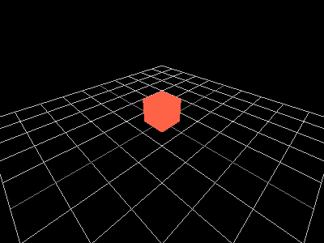
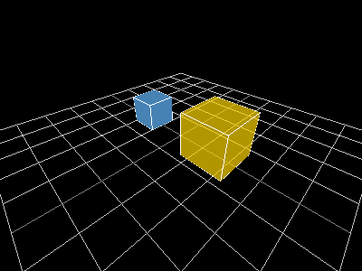
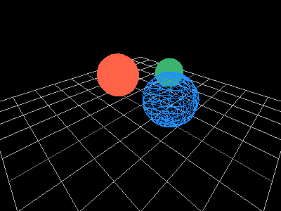
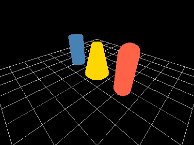
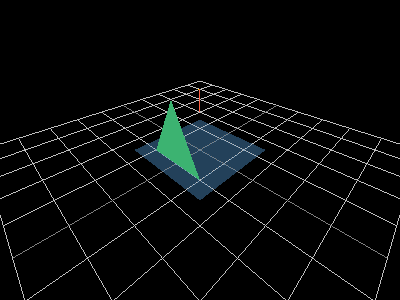
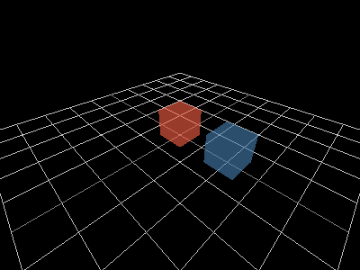
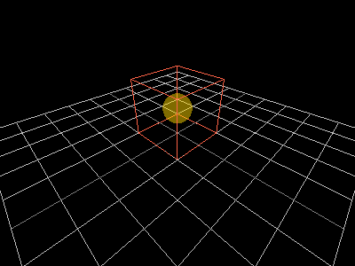

This guide covers 3D shape rendering. Every example uses
raylibr_screenshot_3d(), which sets up a hidden window with
a camera at c(4, 4, 4) looking at the origin, draws a
reference grid, then runs your drawing code.
3D coordinate system
Raylib uses a right-handed coordinate system: X points right, Y points up, and Z points toward you. This is different from the 2D system where Y points down.
Camera
A 3D scene needs a camera. camera_3d() creates one:
cam <- camera_3d(
position = c(4, 4, 4),
target = c(0, 0, 0),
up = c(0, 1, 0),
fovy = 70.0,
projection = camera_projection$perspective
)
cam$position
#> x y z
#> 4 4 4The defaults (target = c(0,0,0),
up = c(0,1,0), fovy = 70) work well for most
cases, so camera_3d(c(4, 4, 4)) is usually enough. See the
Camera guide for modes, controls, and
coordinate conversion.
The 3D drawing block
3D drawing calls must be wrapped in begin_mode_3d() /
end_mode_3d():
begin_drawing()
clear_background("black")
begin_mode_3d(cam)
draw_cube(c(0, 0, 0), 2.0, 2.0, 2.0, "red")
end_mode_3d()
end_drawing()raylibr_screenshot_3d() handles all this boilerplate —
you just provide the drawing code:
raylibr_screenshot_3d(function() {
draw_cube(c(0, 0.5, 0), 1.0, 1.0, 1.0, "tomato")
})
Cubes
raylibr_screenshot_3d(function() {
draw_cube(c(-1.5, 0.5, 0), 1.0, 1.0, 1.0, "steelblue")
draw_cube_wires(c(-1.5, 0.5, 0), 1.0, 1.0, 1.0, "white")
draw_cube(c(1.5, 0.75, 0), 1.5, 1.5, 1.5, color_alpha("gold", 0.7))
draw_cube_wires(c(1.5, 0.75, 0), 1.5, 1.5, 1.5, "white")
})
draw_cube() takes a center position and
width/height/length as floats. draw_cube_wires() draws the
wireframe outline. draw_cube_v() and
draw_cube_wires_v() accept size as a
Vector3.
Spheres
raylibr_screenshot_3d(function() {
draw_sphere(c(-1.5, 1, 0), 1.0, "tomato")
draw_sphere_wires(c(1.5, 1, 0), 1.0, 12L, 12L, "dodgerblue")
draw_sphere_ex(c(0, 1, -2), 0.7, 16L, 16L, "mediumseagreen")
})
draw_sphere() takes a center and radius.
draw_sphere_ex() adds control over the number of rings and
slices (more = smoother). draw_sphere_wires() draws a
wireframe sphere.
Cylinders and capsules
raylibr_screenshot_3d(function() {
draw_cylinder(c(-2, 0, 0), 0.5, 0.5, 2.0, 16L, "steelblue")
draw_cylinder_ex(c(0, 0, 0), c(0, 2, 0), 0.8, 0.3, 16L, "gold")
draw_capsule(c(2, 0, 0), c(2, 2, 0), 0.5, 8L, 8L, "tomato")
})
draw_cylinder() takes a base position, top/bottom radii,
height, and slices. draw_cylinder_ex() takes start and end
points for arbitrary orientation. draw_capsule() is a
cylinder with rounded ends.
Planes and lines
raylibr_screenshot_3d(function() {
draw_plane(c(0, 0, 0), c(3, 3), color_alpha("steelblue", 0.5))
draw_line_3d(c(-2, 0, -2), c(2, 3, 2), "tomato")
draw_point_3d(c(0, 2, 0), "gold")
draw_triangle_3d(
c(-1, 0, 1), c(1, 0, 1), c(0, 2, 1),
"mediumseagreen"
)
})
draw_plane() draws a flat quad at a given position with
a given size.
Grid
draw_grid() renders a reference grid on the XZ plane,
centered at the origin. raylibr_screenshot_3d() includes
draw_grid(10L, 1.0) automatically:
raylibr_screenshot_3d(function() {
# The grid is already drawn by raylibr_screenshot_3d()
# Just add something to see the scale
draw_cube(c(0, 0.5, 0), 1.0, 1.0, 1.0, color_alpha("tomato", 0.6))
draw_cube(c(2, 0.5, 0), 1.0, 1.0, 1.0, color_alpha("steelblue", 0.6))
})
Each grid square is 1 unit wide. The cubes above are 1 unit on each side, spaced 2 units apart.
Bounding boxes
bounding_box() defines an axis-aligned box by its min
and max corners. Useful for collision detection and visualization:
raylibr_screenshot_3d(function() {
bb <- bounding_box(c(-1, 0, -1), c(1, 2, 1))
draw_bounding_box(bb, "tomato")
draw_sphere(c(0, 1, 0), 0.5, color_alpha("gold", 0.5))
})
Models
For complex 3D objects, load models from files with
load_model() and draw them with draw_model().
See the 3D Model demo for a complete
example with textures and post-processing shaders.